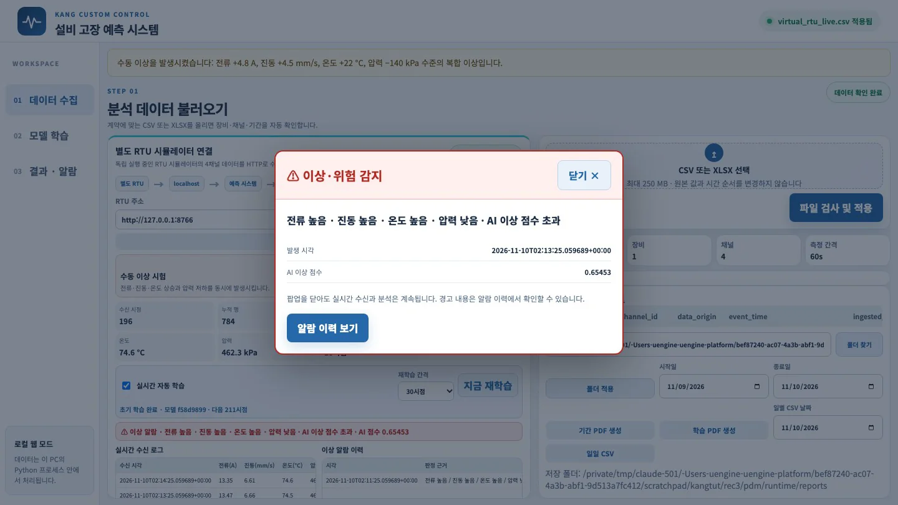
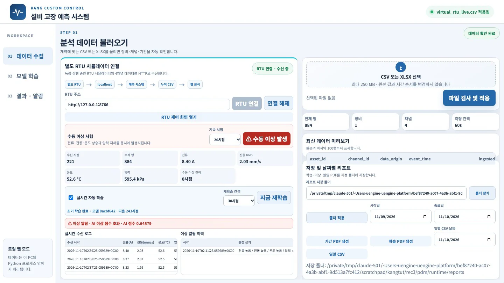
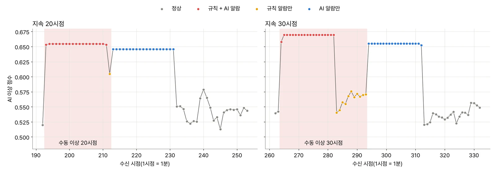

가상 RTU의 「수동 이상」으로 네 채널의 값을 한꺼번에 바꿉니다. 예측 시스템이 어떻게 반응하는지 확인합니다. 규칙 알람과 AI 알람은 다르게 움직입니다. AI는 값이 바뀌는 순간에 강하게 반응하고, 이상한 값이 오래 이어지면 오히려 조용해집니다. 이상 PDF 자동 저장, 지금 재학습, 재학습 간격도 확인합니다.
무엇을 · 왜#
예측 시스템은 두 가지 판정 방식을 함께 사용합니다.
| 판정 | 기준 | 장점 | 약점 |
|---|---|---|---|
| 고정 규칙 | 전류 ≥ 11.5 A, 진동 ≥ 5.0 mm/s, 온도 ≥ 70 °C, 압력 ≤ 500 kPa | 이유가 분명하고 모델 없이도 동작 | 한계값 아래에서 진행하는 이상은 못 봄 |
| AI(Isolation Forest) | 정상 구간과 다른 정도(이상 점수)가 임계값을 넘으면 | 여러 채널의 조합·변화를 함께 봄 | 왜 이상인지 설명하기 어렵고, 학습한 「정상」에 따라 달라짐 |
AI 판정은 이렇게 만들어집니다.
- 특징: 채널마다 최근 20시점을 묶은 창에서 다섯 가지를 계산합니다. 평균(
mean), 표준편차(std), 기울기(slope_per_second), 이웃 시점 사이 최대 변화(max_abs_delta), 중앙값에서 가장 멀리 벗어난 정도(peak_from_median)입니다. 네 채널에서 계산하므로 모두 20개입니다. 창이 다 차지 않은 앞 19시점은 점수를 매기지 않습니다. - 학습: 원시 시점을 시간 순서대로 학습 60%·검증 20%·최종 평가 20%로 나눕니다. 표준화(StandardScaler)와 Isolation Forest(나무 100그루)는 학습 구간에만 맞춥니다.
- 임계값: 검증 구간 점수의 99% 지점입니다. 화면의 점수가 클수록 정상과 다른 정도가 큽니다.
- 실시간 판정: 새 시점이 들어올 때마다 최신 창의 점수를 매겨 임계값과 비교합니다.
Isolation Forest는 데이터를 무작위로 나누는 작업을 반복합니다. 이때 한 점이 따로 떨어질 때까지 몇 번 나누었는지 셉니다. 정상 무리에서 멀리 있는 점일수록 빨리 떨어지므로 점수가 높아집니다. 이 방법은 고장 기록 없이 정상 데이터만으로 학습할 수 있습니다. 대신 「무엇이 정상인가」를 학습 구간이 정합니다.
따라 하기#
2장처럼 가상 RTU와 예측 시스템을 실행하고 연결한 상태에서 시작합니다.
-
「01 데이터 수집」의 수동 이상 시험에서 지속 시점 20시점을 고르고 ⚠ 수동 이상 발생을 누릅니다. 위에 「수동 이상을 발생시켰습니다: 전류 +4.8 A, 진동 +4.5 mm/s, 온도 +22 °C, 압력 −140 kPa 수준의 복합 이상입니다」가 뜹니다. 가상 RTU 화면의 「이상 발생」 버튼과 같은 일을 합니다.
-
다음 시점부터 분석 줄이 빨갛게 바뀝니다. 「⚠ 이상 알람 · 전류 높음 · 진동 높음 · 온도 높음 · 압력 낮음 · AI 이상 점수 초과 · AI 점수 0.65342」. 이번 실행에서는 193번째 시점부터였습니다. 정상일 때 0.52 안팎이던 점수가 0.653으로 뛰었습니다.
-
AI 이상 판정이 3시점 연속되면 경고 팝업이 뜹니다(이번에는 195번째 시점, 점수 0.65453). 소리도 짧게 납니다. 닫기나 Esc로 닫아도 수신과 분석은 계속됩니다.

AI 이상이 3시점 연속되자 뜬 경고 팝업. 판정 근거, 발생 시각, AI 이상 점수 -
이제 분석 줄을 계속 지켜봅니다. 이번 실행에서 판정은 이렇게 바뀌었습니다.
수신 시점 값 분석 줄 193~211 이상 규칙 + AI 알람 212 이상(20번째) 규칙 알람만(AI 점수 0.60461, 임계값 아래) 213~231 정상으로 돌아옴 AI 알람만(「이상 알람 · AI 이상 점수 초과」) 232~ 정상 정상 
값이 정상으로 돌아온 뒤에도 AI 알람만 이어지는 화면(221번째 시점). 네 채널 값은 정상인데 분석 줄은 「이상 알람 · AI 이상 점수 초과」 -
같은 일을 30시점으로 한 번 더 합니다. 이번에는 264번째 시점부터 이상이 시작되었고 266번째 시점에 팝업이 떴습니다. 283번째 시점부터 293번째 시점까지는 이상이 이어지는데도 AI가 조용했습니다. 규칙 알람만 남았습니다. 값이 돌아온 294번째부터 312번째 시점까지는 다시 AI 알람만 이어졌습니다.

녹화하면서 화면에서 읽은 AI 이상 점수와 판정. 분홍 띠가 수동 이상 구간입니다 -
왜 이렇게 될까요? AI가 보는 것은 값 자체가 아니라 20시점 창의 특징입니다.
- 이상이 막 시작되면 창 안에 정상과 이상이 섞입니다. 평균뿐 아니라 표준편차·기울기·최대 변화·중앙값 편차가 한꺼번에 튀므로 점수가 높습니다.
- 20시점이 지나 창이 이상한 값으로 꽉 차면, 창 안에서는 값이 고르게 보입니다. 튀는 특징은 평균 네 개뿐이라 점수가 내려갑니다. Isolation Forest는 학습 범위 밖으로 「얼마나 멀리」 벗어났는지보다 「몇 가지가」 벗어났는지에 더 민감합니다.
- 값이 돌아온 뒤 19시점 동안은 창 안에 이상한 값이 남아 있습니다. 따라서 정상 값과 이상한 값이 다시 섞입니다.
그래서 이 AI는 변화를 잘 잡는 탐지기입니다. 오래 이어지는 이상은 고정 규칙으로 감시합니다. 두 판정을 함께 써야 하는 이유가 여기 있습니다.
-
아래로 내려 이상 알람 이력을 봅니다. 20시점과 30시점 이상이 각각 한 줄씩, 모두 두 줄입니다. 판정 근거는 둘 다 「전류 높음 / 진동 높음 / 온도 높음 / 압력 낮음 / AI 이상 점수 초과」입니다. AI 알람만 남은 구간도 같은 알람이 이어지는 것으로 보므로 새 줄이 생기지 않습니다.
-
리포트 폴더(기본
runtime/reports)를 엽니다. 새 알람이 시작될 때마다 PDF 한 장과 그 시점까지의 CSV 스냅숏 하나가 생깁니다.anomaly_20261110_021125.pdf anomaly_data_20261110_021125.csv anomaly_20261110_032225.pdf anomaly_data_20261110_032225.csvmacOS에서는 PDF의 한글이 네모로 보입니다
v0.5.1의 PDF 모듈(reportlab)은 macOS의
AppleSDGothicNeo.ttc를 글꼴로 등록하려 하지만, 이 글꼴 형식(포스트스크립트 외곽선)을 읽지 못합니다. 그래서 Helvetica로 바뀌고 한글이 □로 나옵니다. 숫자(시각, 점수, 네 채널 값)는 읽을 수 있습니다. Windows(맑은 고딕)에서는 이 문제가 없을 것으로 보입니다. 이번 실행에서 확인한 제약입니다. -
학습 설정 줄로 돌아갑니다.
- 지금 재학습: 누적 데이터로 바로 다시 학습합니다. 이번에는
모델 19f0c408 · 다음 354시점→모델 359b035d · 다음 374시점으로 바뀌었습니다. 학습 PDF는 만들지 않으며, 필요하면 리포트 메뉴에서 요청합니다. - 재학습 간격: 30·60·120시점 가운데 고릅니다. 60으로 바꾸자 「다음 404시점」이 되었습니다.
- 실시간 자동 학습 체크를 끄면 지금 모델을 계속 씁니다. 5장에서 이 설정이 결과를 얼마나 바꾸는지 실험합니다.
재학습할 때는 규칙 한계를 넘은 시점을 학습 데이터에서 뺍니다. 수동 이상 값은 규칙 한계를 넘으므로 다음 모델이 그 값을 정상으로 배우지 않습니다. 하지만 규칙 한계 아래에서 서서히 변하는 값은 빠지지 않습니다. 이것이 5장의 주제입니다.
- 지금 재학습: 누적 데이터로 바로 다시 학습합니다. 이번에는
확인 문제#
-
30시점 수동 이상에서 283번째부터 293번째 시점까지 AI 알람이 꺼진 까닭을 특징 창으로 설명해 보세요.
정답
264번째 시점에 시작한 이상이 20시점 이어지면(283번째 시점), 20시점 창 전체가 이상한 값으로 채워집니다. 그러면 창 안의 표준편차·기울기·최대 변화·중앙값 편차가 정상 때와 비슷해지고, 평균 네 개만 벗어납니다. 그래서 이상 점수가 임계값 아래로 내려갑니다. 그동안에는 고정 규칙이 알람을 유지합니다.
-
값이 정상으로 돌아온 뒤에도 19시점 동안 AI 알람이 이어졌습니다. 현장에서 이 알람을 어떻게 읽어야 할까요?
정답
창 안에 이상한 값이 남아 있어 생기는 꼬리입니다. 「지금도 이상」이라는 뜻이 아니라 「최근 20분 안에 큰 변화가 있었다」는 뜻에 가깝습니다. 네 채널의 현재 값과 규칙 판정을 함께 보고, 꼬리가 창 길이(20시점)만큼 이어지는지 확인합니다.
-
팝업은 왜 「AI 이상 3시점 연속」에서만 뜨고, 정상 10시점 뒤에야 다시 뜰 수 있게 했을까요?
정답
한두 시점에서만 점수가 튀는데 팝업이 계속 뜨면 사람이 팝업을 보지 않게 됩니다(알람 피로). 3시점 연속으로 확인하고, 정상이 10시점 이어진 뒤에야 다음 팝업을 허용해 같은 사건에 팝업이 여러 번 뜨지 않게 합니다. 알람 이력과 이상 PDF도 사건(에피소드)마다 한 번만 만듭니다.